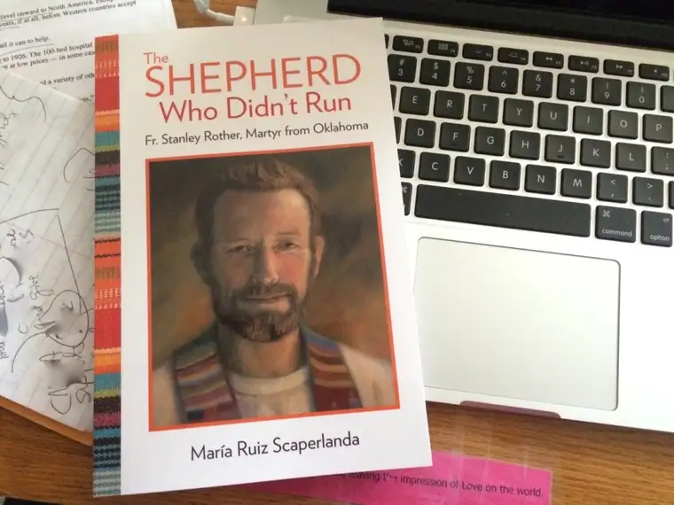
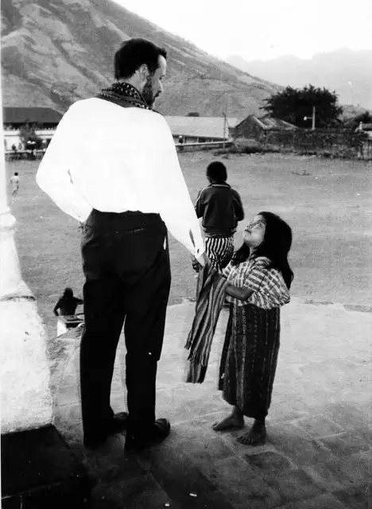
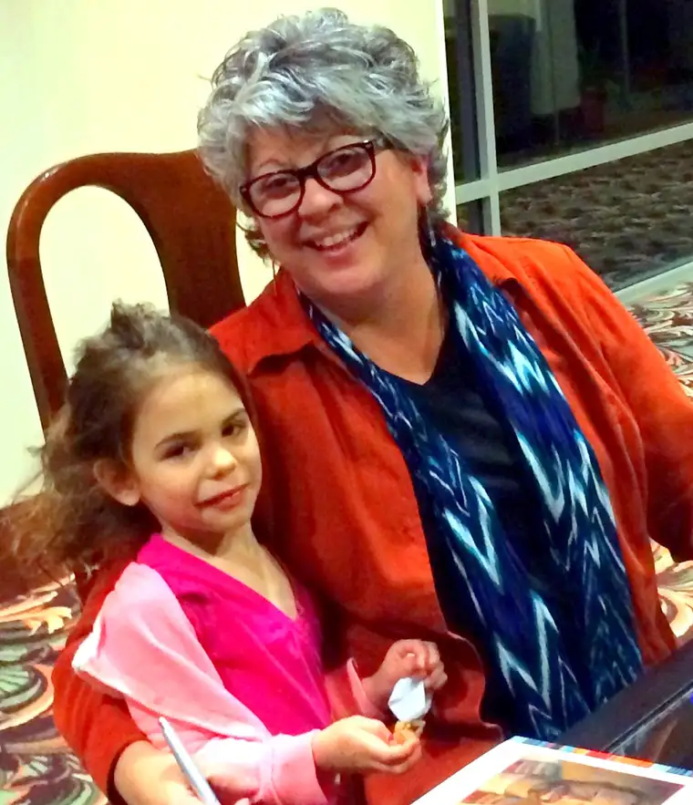

I knew about “The Shepherd Who Didn’t Run” well before I was asked to endorse it, and even, I assume, before the title was chosen. It’s author, Maria Ruiz Scaperlanda, is both a dear friend and skilled journalist and writer. She’s won awards for her work, but even more, she’s just a class act of a human being.
So prior to sitting down to read the account of Father Stanley Rother and his incredible, sacrificial life, which ended in his murder in Guatamela on July 28, 1981, I knew it would be a powerful read. The whole project, after all, was covered in prayer, and the subject himself, on his way to official sainthood within the Catholic Church.

I’m privileged today to share this Q & A with Maria, which gave me even more insight into the soul of a man whose story is going to undoubtedly affect many as deeply as it did me. (My Forum column from July 2015 tying Father Rother’s life and death with that of a young man from Fargo.)
So let’s get to it. My questions, and Maria’s answers.
Q. Maria, it was such a pleasure reading your book, “The Shepherd Who Didn’t Run.” I’ve found myself thinking about this servant of God often, and have shared about him with others. I’m so grateful to have his story in my heart and definitely see that this story was meant by God to come more fully into the light and our consciousness.
As I’m thinking about the story, I am wondering more about your role in it as the writer. I understand the story was attempted earlier, but that in time it was necessary to bring in another writer to bring it to fruition. How did you approach this daunting task? How did you first find out about Father Rother? And what helped you feel qualified to write his story? Was it something personal with which you connected?
A: First of all, thank you for this opportunity to share with your readers, Roxane!
The Church of Oklahoma has done a great job of making sure that the story of Father Stanley Rother is passed on from generation to generation. When my family first moved to the state 20 years ago, my kids (who attended Catholic schools here) came home talking about this local priest who died in Guatemala—and I became intrigued! I did a little digging and wrote a few articles about Father Stanley for various Catholic publications. Years later, when the Archdiocese opened the cause and began working on this project, I was invited to be part of the Historical Commission, mostly working with the Spanish documents.
I also had the joy to know Father David Monahan, whom I mention in the book and credit with being the first biographer of Father Stanley. Father Monahan was a gifted journalist (editor of the Archdiocesan newspaper, Sooner Catholic, for many years!) who worked for years collecting information and writing Father Stanley’s life story. Unfortunately, Father Monahan developed dementia and was unable to complete the book—or publish it.
When Archbishop Coakley commissioned me to write this book, I had full access to archdiocesan materials as well as to Father Monahan’s unpublished biography.
Trying to tell someone’s life story is, indeed, a daunting task! One of the things I had to let go of was the unrealistic notion that I would – or could — be telling the WHOLE story! Mine is Father Stanley’s first biography, but I assume not his last. If / when he becomes an official saint, I’m sure there will be many other books published about him. My task was to introduce readers to him by sharing my own experience and understanding of Father Stanley’s story.
Q: What about Fr. Rother’s story most inspired you and has permanently stayed with you and made you a better person?
A: There are so many things about Father Stanley that inspire me! I love that he was an ordinary man, much like you and me, who continually and deliberately discerned how to best serve God with his life. This really spoke to me.
I am also moved by Father Stanley’s commitment to the poorest of the poor, with whom he shared meals, the Eucharist, and work, side-by-side in the fields. The farmer from Okarche, Oklahoma, became the pastor who drove the tractor and worked the Guatemala farmland alongside his Tz’utujil parishioners!
From all accounts, Father Stanley had a great sense of humor and he loved children. Whether in family photos or in the pictures from the Guatemala mission, Father Stanley is often seen with a tail of giggling children who followed him and grabbed his hands—much like Jesus in the Gospels. I love this part of his personality and relate to it.
I am now a grandmother to six amazing grandchildren and when I let go of the lists in my head and I am truly present to them, they certainly remind me about what’s genuinely important in life!
Q: What was the most difficult aspect of taking on this project? How about the easiest?
A: Good question! The most difficult thing about this project was what I alluded to before, the idea that I had to tell everything, fit every single thing there is to tell about Father Stanley into this one book! Once I adjusted that crazy expectation in my head, then I could relax and tell one complete story of his life.
What made it very easy to work on this is the fact that I truly believe that Father Stanley died as a martyr and that he was a good, holy priest. I know that his life will be one day (soon, I hope!) be incorporated into the canon of saints as someone we can emulate and someone we can pray to intercede for us. He is the real deal!
And I think that one of the greatest testimonies to Father Stanley Rother’s sainthood is the love, devotion, and conviction with which the Church of Oklahoma and the Church of Guatemala remember him. His life and his priestly service already stand out as a testament to the difference that one person can, and does, make.
Q: In what ways do you see Fr. Rother’s humanity? In what ways do you see God’s hand within him (divine influence)?
A: I love to tell young people, in particular, about Stanley the 23-year-old seminarian that failed his first year of Theology and was sent home after being told he could no longer be in the seminary. His struggle with learning a subject (in his case, Latin!) is something many of us can relate to! Yet when asked by the bishop what he wanted to do after the seminary sent him home, without hesitation Stanley affirmed, I want to be a priest. I want to try again. He did not give up. He kept trying, still feeling and wanting to respond to the call of priestly ministry, even though he had to wonder how he’d be able to do it. And obviously, he did finish.
And how amazing is it that this seminarian who failed a year in school because of his inability to learn Latin was able to go to a foreign mission and learn not only Spanish, but also the difficult and very technical Tz’utujil Mayan dialect!
To me, this in itself is a symbol of living grace! Clearly, God blessed Father Stanley’s desire and hard work by giving him this gift of language. I’d even say it’s a miracle!
Q: How did you respond when you learned the news that the case for the canonization of Fr. Rother had been advanced, even as you were finishing this project?
A: What great news! I was still working on final edits with the copy editor when I heard the news.
Here’s where we are. This past June (2015) a panel of nine theologians handed a majority vote affirming that Fr. Stanley Rother’s death was in odium fidei, or in hatred of the faith. This is an affirmation that the Church believes he is a martyr.
Now a panel of 15 cardinals and archbishops must approve the martyrdom cause. This is where we are today, waiting on this vote. If the panel agrees with the vote this past summer, the prefect will present it to Pope Francis, who will promulgate the decree of beatification.
After the determination of martyrdom is confirmed, Father Stanley can be beatified, the final stage before canonization.
Q: I have found myself really captivated by the cover art of the book. Did you have any input into this?
A: No, I had nothing to do with the design of the book—although I think OSV did a beautiful job! The cover art was first published as the cover of St. Anthony Messenger magazine for an article featuring Father Stanley in the July 2006 issue.
And the gifted artist is Jim Effler, based in Cincinnati. Check out his other art here: http://www.jimeffler.com/
Q: Did you rely on Fr. Rother himself to intercede in this project? If so, did you become aware in any real or concrete way that he was responding and helping you?
A: my contract with the Archdiocese of Oklahoma City for this project called for me to complete a full draft of the book in one year, but I had to ask for a six month extension. That particular year was very difficult for me, personally, because of several major life events.
Two of my closest friends were dying of cancer, and my father’s health suddenly declined to the point that he was in and out of the hospital several times that year. I would go back and forth from being with my dad in the hospital, to being with my dear friend on her deathbed. I had never experienced anything like this before… these were significant moments in my life that demanded not only a lot of time, but above all, a lot of emotional and spiritual energy. I kept reminding God in the midst of it all that we had this book to research and write! I simply felt “spent”.
There is a grace in that emptiness. It forced me to rely completely and solely on God… and to believe that if, indeed, writing Father Stanley’s story was His project for me, then God would give me what I needed to make it happen.
The best advice I received was a friend’s suggestion that I invite Father Stanley into my painful and difficult year and let him walk with me. I think this brought us close… and in my writing, it helped me understand the events in Father Stanley’s life with new eyes.
Q: What is one message that if the reader gets nothing else from this read, you would want to make certain they come away with?
I believe that our world is in desperate need of faith heroes, Roxane. And by that I mean, we need their witness! We draw strength from knowing about and being with people who are simply living faithfully their very ordinary life.
I love how simply Oklahoma City’s Archbishop Paul Coakley states it: “We need the witness of holy men and women who remind us that we are all called to holiness — and that holy men and women come from ordinary places like Okarche, Oklahoma.”
Father Stanley is a perfect example for this extraordinary Jubilee Year of Mercy, especially because of his ordinary life!

Q: What do you think God most wants to share with his children through this story?
A: If you look at the list of corporal and spiritual works of mercy, and you read Father Stanley’s life, you will see how passionately he chose to live his ordinary life. He is a saint of mercy! And I don’t mean how he lived the corporal works of mercy in Guatemala, especially when the violence began. Yes, he did “feed the hungry,” “shelter the homeless,” “visit the sick,” “comfort the afflicted,” “bear wrongs patiently,” “bury the dead” during this tragic time.
But he also lived Mercy right here in Oklahoma, and in the seminary, and working the farm fields!
This is what God wants me to see. When I help my sleep-deprived daughter by playing with her newborn, when I forgive someone who will never ask me for forgiveness, when I spend time playing on the floor with my twin grandchildren, when I take my mother to visit my father’s grave (especially when I don’t feel like it!), and when I pray for those who don’t have anyone to pray for them… I am choosing to live in and live out Mercy!
Q: What else do you wish people would know about this story that I haven’t asked about? And where can readers get a copy of the book?
A: It’s always a pleasure to drop by your blog, Roxane. Thank you so much for your probing questions – and for the opportunity to share with your readers about the life of Father Stanley Rother, the martyr from Oklahoma, and our brother in Christ!
You can find the book online at OSV.com and all the big online stores, Amazon and Barnes and Noble. Also do ask at your local Catholic bookstore! And if you still need help, just let me know.

Thank you Maria! Prayers and peace for this book’s success and in your work to share it with others.
Find additional thoughts by Maria at her blog, Day by Day with Maria.